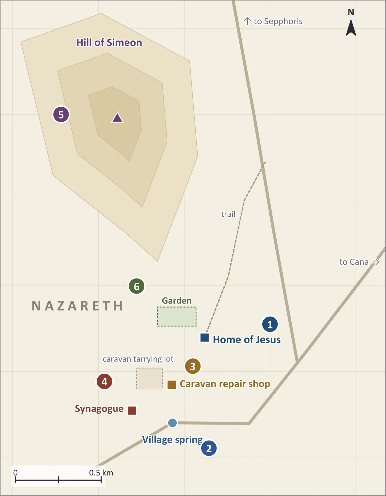
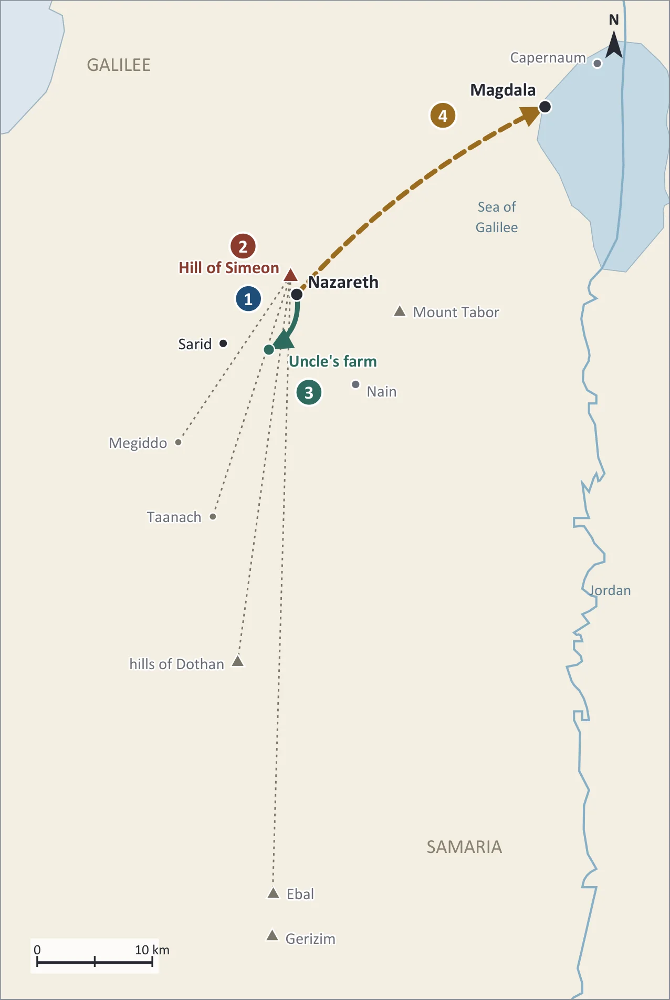
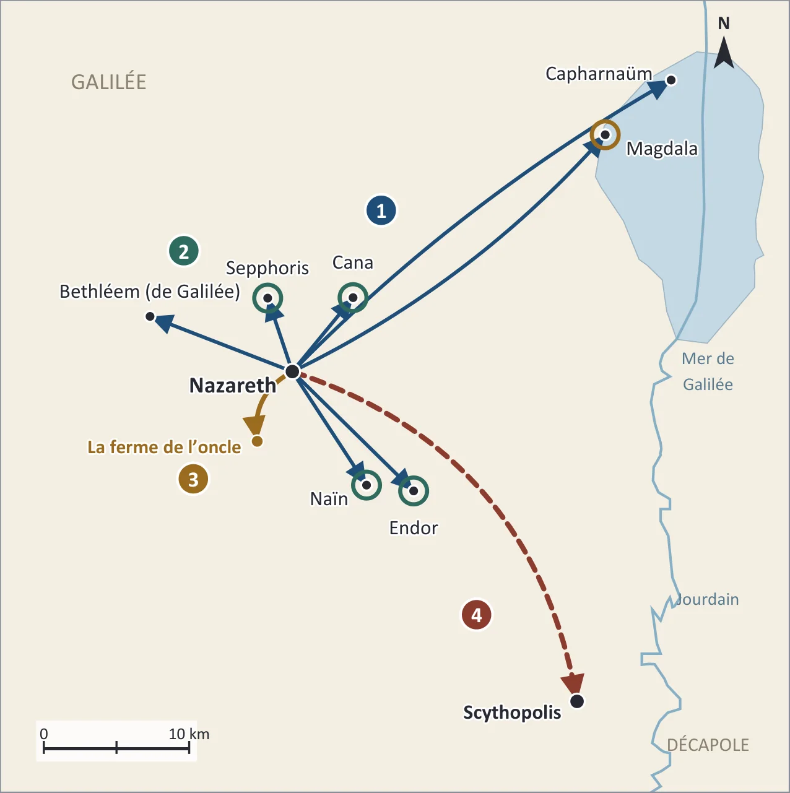
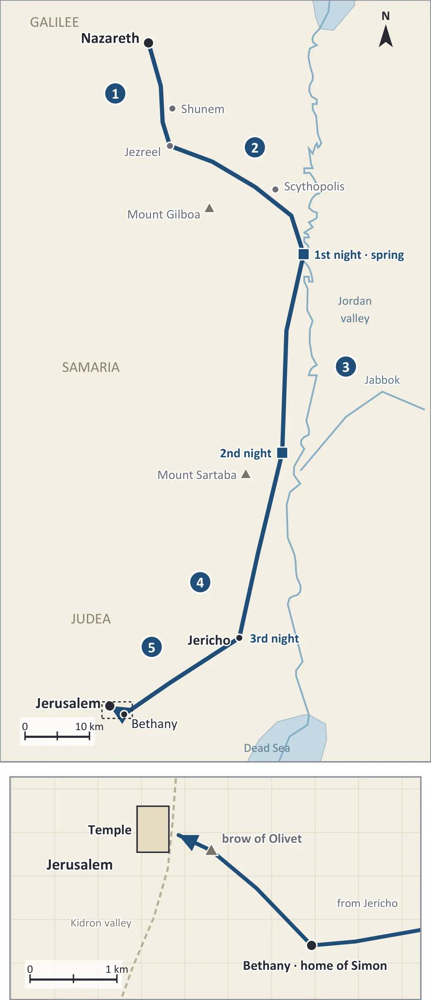
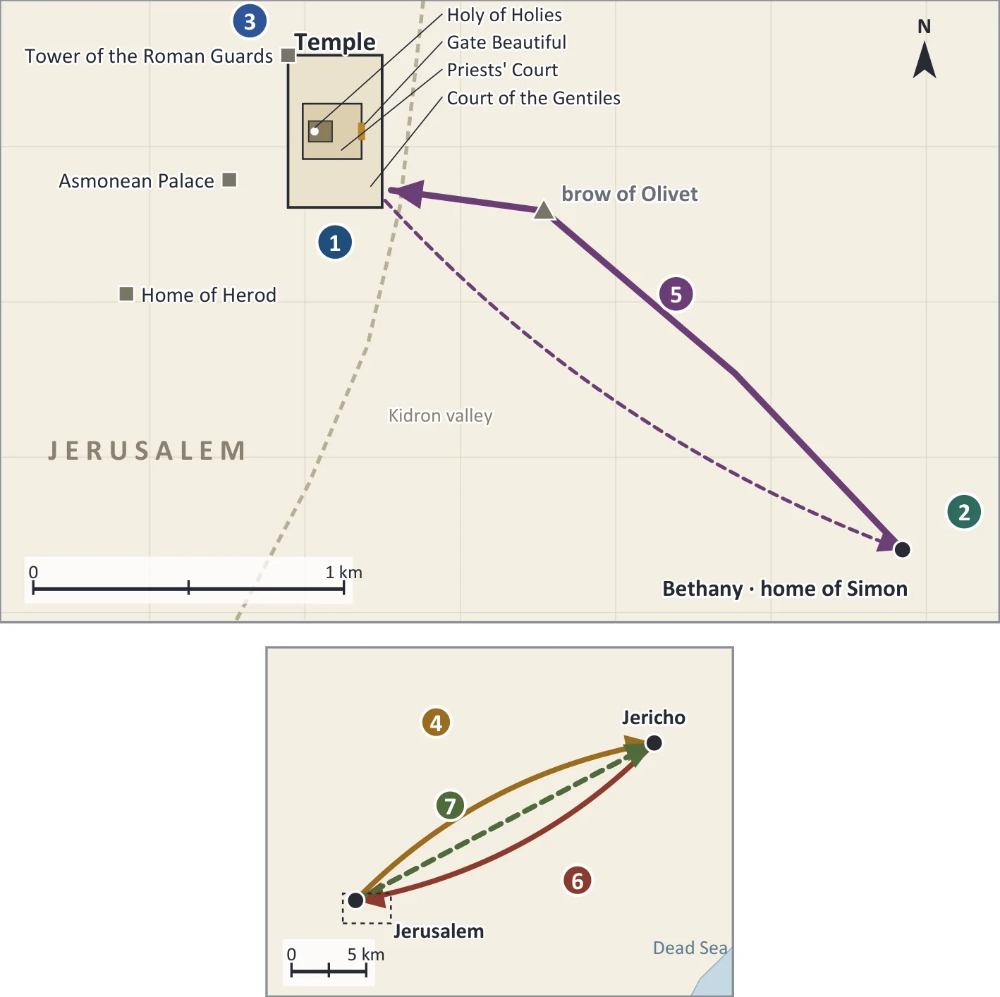
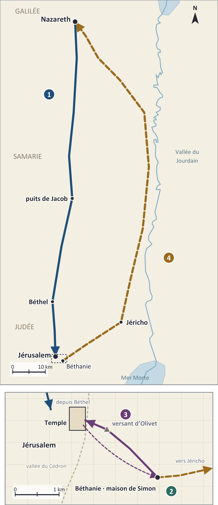
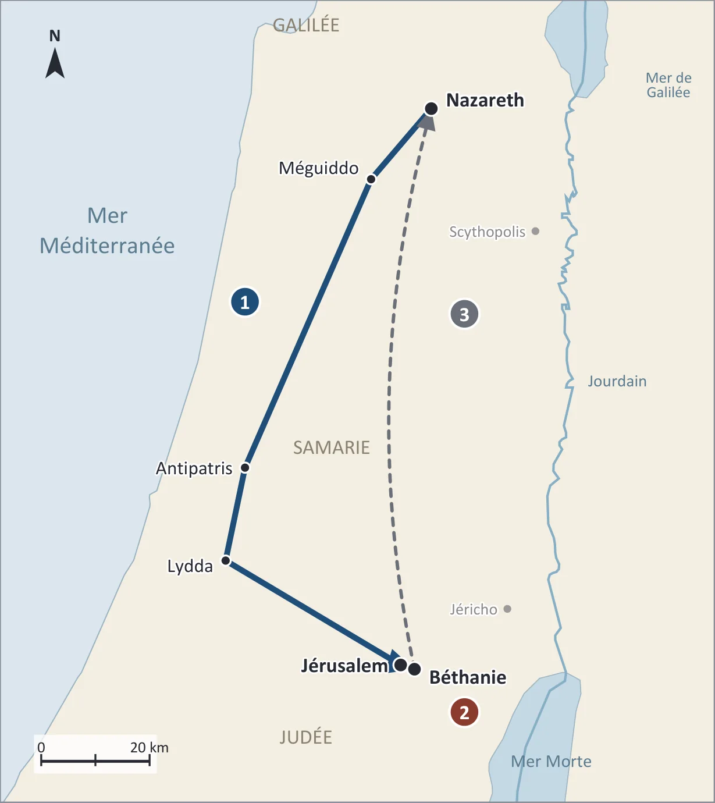
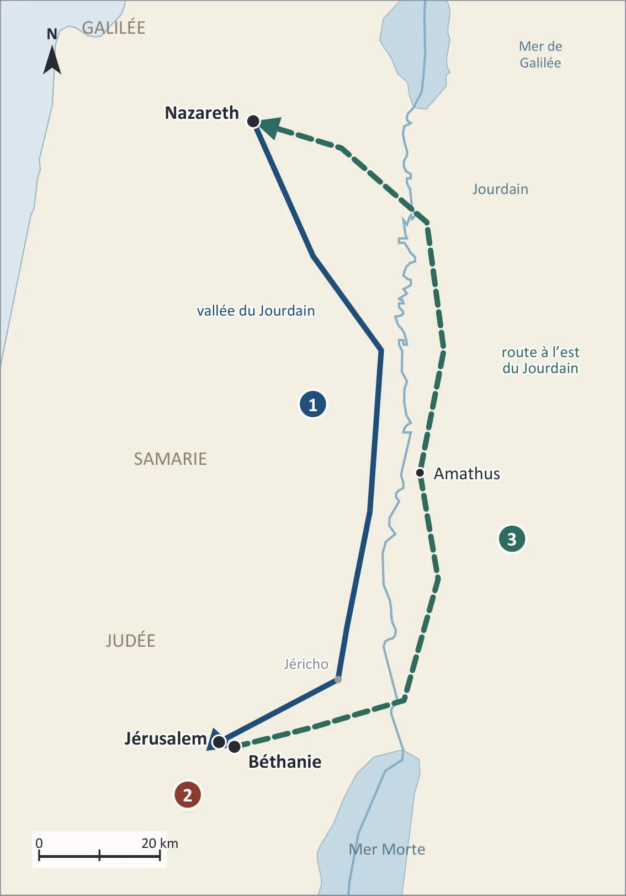
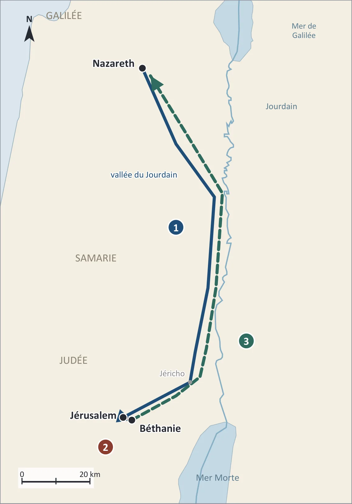

Partie I De la naissance à l’âge d’homme
Fascicules 120–129
Fascicule 120L’effusion de Micaël sur Urantia
| Évènement | Livre d’Urantia | Bible |
|---|---|---|
| 1. La mission de la septième effusion | 120:1.1–7 | Aucun |
| Sur Salvington, le frère de Micaël, à qui il confiait l’univers, lui remit sa mission pour sa septième et dernière effusion. Cette fois, Micaël apparaitrait sur Urantia comme un bébé sans défense, entièrement soumis à la volonté de son Père, tandis que son frère assumait la juridiction de l’univers et donnait l’assurance qu’aucune rébellion ne pourrait se produire pendant son absence. | ||
| 2. Les limitations de l’effusion | 120:2.1–9 | Aucun |
| Son frère énonça neuf conseils pour l’effusion : grandir comme un enfant d’Urantia, mettre techniquement fin à la rébellion de Lucifer en tant que Fils de l’Homme, agir surtout comme un éducateur, répandre l’Esprit de Vérité et révéler le Père. Il recommanda à Micaël de s’abstenir de toute volonté de puissance surhumaine après l’arrivée de son Ajusteur de Pensée. | ||
| 3. Conseils et avis supplémentaires | 120:3.1–12 | Aucun |
| Après avoir consulté Gabriel, le frère ajouta des conseils supplémentaires : suivre les coutumes familiales admises de l’époque, éviter de s’engager dans les affaires économiques et politiques, ne fonder aucune secte, ne laisser ni écrits ni portraits, et probablement ne pas se marier. Puis, en présence de tout Salvington assemblé, Micaël se retira de leur milieu. | ||
| 4. L’incarnation — fusion des deux en un | 120:4.1–6 | Aucun |
| Christ Micaël était véritablement un être de double origine, mais non une double personnalité ; il était Dieu incarné dans l’homme. Il ne devint pas progressivement Dieu, car Jésus fut toujours Dieu et homme. Le but spirituel suprême de l’effusion était de rehausser la révélation de Dieu. | ||
Fascicule 121L’époque de l’effusion de Micaël
| Évènement | Livre d’Urantia | Bible |
|---|---|---|
| 1. L’Occident au premier siècle après le Christ | 121:1.1–9 | Aucun |
| Quand Jésus naquit, le monde offrait les conditions les plus favorables à l’effusion d’un Fils Créateur. Les systèmes politiques romains, la langue et la culture grecques, et les enseignements religieux et moraux juifs unifiaient l’Occident, tandis que de bonnes routes et des mers débarrassées des pirates faisaient prospérer les voyages et le commerce. | ||
| 2. Le peuple juif | 121:2.1–12 | Aucun |
| Les Juifs, le groupe le plus influent des peuples sémitiques, vivaient en Palestine, au carrefour de trois continents. Leurs plus de deux-cents synagogues dans le monde romain devinrent des bases pour le nouvel évangile, et, sous Hérode l’Iduméen puis sous son fils Hérode Antipas, les Juifs aspiraient à un Messie. | ||
| 3. Parmi les Gentils | 121:3.1–10 | Aucun |
| La société méditerranéenne du premier siècle était divisée en cinq classes : l’aristocratie, les milieux d’affaires, la petite classe moyenne, le prolétariat libre et les esclaves. La moitié de la population de l’État romain était esclave, et pourtant il y avait peu de conscience de classe, et le christianisme ne fut pas un mouvement économique. | ||
| 4. La philosophie des Gentils | 121:4.1–6 | Aucun |
| Le monde des Gentils était dominé par quatre philosophies dérivées du platonisme : l’épicurienne, la stoïcienne, la cynique et la sceptique. Le stoïcisme atteignit une haute moralité mais ne connut pas Dieu comme un Père, tandis que les cyniques, qui conservaient des restes des enseignements de Melchizédek, aidèrent à préparer les gens du peuple pour les missionnaires chrétiens ultérieurs. | ||
| 5. Les religions des Gentils | 121:5.1–18 | Aucun |
| Les religions de l’Occident comprenaient les cultes païens, le culte de l’empereur, l’astrologie et les religions à mystères. Les mystères, avec leur promesse de salut personnel, préparèrent la voie à la diffusion des enseignements de Jésus, mais le christianisme de Paul les surpassa en reposant sur une rédemption morale et sur un fait historique. | ||
| 6. La religion hébraïque | 121:6.1–9 | Aucun |
| La pensée religieuse de Jérusalem avait été fortement influencée par la culture et la philosophie grecques, grandement aidées par la traduction grecque des Écritures hébraïques. Philon d’Alexandrie harmonisa la philosophie grecque avec la théologie hébraïque, et Paul se servit de cette harmonisation comme fondement de son culte chrétien. | ||
| 7. Juifs et Gentils | 121:7.1–12 | Aucun |
| Liés par la loi et la tradition, les Juifs ne voulurent pas partager Yahweh avec les Gentils et ne devinrent donc pas les messagers du nouvel évangile. L’évolution religieuse passa vers l’ouest en Europe, et le christianisme d’Antioche de Paul mêla l’évangile de Jésus à la philosophie grecque, aux enseignements des cultes à mystères et à la morale juive. | ||
| 8. Écrits antérieurs | 121:8.1–14 | Aucun |
| L’auteur médian explique qu’il a puisé dans les notes perdues d’André et dans les quatre Évangiles. Marc écrivit d’après les souvenirs de Pierre et acheva son Évangile en l’an 68 ; Isador écrivit celui de Matthieu à Pella en 71 ; Luc écrivit en Achaïe en 82 ; et Nathan commença l’Évangile de Jean en 101, sur l’insistance de Jean. | ||
Fascicule 122Naissance et petite enfance de Jésusjuin 8 av. J.-C. – octobre 6 av. J.-C.
| Évènement | Livre d’Urantia | Bible |
|---|---|---|
| 1. Joseph et Marie | 122:1.1–3 | Aucun |
| Joseph descendait d’une lignée d’artisans habiles, et David et Salomon ne figuraient pas parmi ses ancêtres directs. L’ascendance variée de Marie comprenait des femmes remarquables comme Tamar, Ruth et Bethsabée. Gabriel choisit ce couple idéal et pourtant ordinaire comme parents de l’effusion. | ||
| 2. Gabriel apparait à Élisabeth | 122:2.1–8 | Lc 1:5-25 |
| À la fin de juin de l’an 8 av. J.-C., Gabriel apparut à Élisabeth à midi et lui annonça qu’elle enfanterait Jean, le précurseur d’un éducateur divin. Pendant cinq mois, elle n’en parla à personne, pas même à son mari, et Zacharie, longtemps sceptique, ne fut pleinement convaincu par un rêve qu’environ six semaines avant la naissance de Jean.Diffère de la BibleL’Évangile de Luc dit qu’un ange apparut à Zacharie pendant qu’il brulait l’encens dans le temple et le rendit muet à cause de son incrédulité, tandis que le Livre d’Urantia dit que Gabriel apparut à Élisabeth et que Zacharie fut convaincu plus tard par un rêve. | ||
| Marie rend visite à Élisabeth dans la ville de Juda | 122:2.6 | Lc 1:39-56 |
| Gabriel apparut à Marie vers le milieu de novembre de l’an 8 av. J.-C. Plus tard, avec le consentement de Joseph, Marie se rendit à la ville de Juda, à six kilomètres à l’ouest de Jérusalem, dans les collines, pour rendre visite à Élisabeth. Elle y resta trois semaines tandis qu’elles comparaient leurs expériences, et Élisabeth fit beaucoup pour affermir la foi de Marie.Diffère de la BibleL’Évangile de Luc dit que Marie resta environ trois mois, que l’enfant tressaillit dans le sein d’Élisabeth et que Marie chanta un cantique de louange, tandis que le Livre d’Urantia dit seulement qu’elle resta trois semaines pendant que les deux femmes comparaient leurs expériences. | ||
| La naissance de Jean (25 mars 7 av. J.-C.) | 122:2.7 | Lc 1:57-80 |
| Jean naquit dans la ville de Juda le 25 mars de l’an 7 av. J.-C. Zacharie et Élisabeth se réjouirent grandement et, lors de sa circoncision le huitième jour, ils l’appelèrent Jean, comme il leur avait été prescrit. Un neveu de Zacharie était déjà parti pour Nazareth afin de porter la nouvelle à Marie.Diffère de la BibleL’Évangile de Luc dit que Zacharie écrivit le nom de Jean sur une tablette, recouvra la parole et prophétisa, tandis que le Livre d’Urantia ne mentionne ni qu’il ait été rendu muet ni aucune prophétie. | ||
| 3. L’annonciation faite à Marie par Gabriel | 122:3.1–4 | Lc 1:26-38 |
| Un soir, vers le coucher du soleil, le lendemain du jour où Marie avait conçu, Gabriel lui apparut dans sa maison de Nazareth et lui annonça qu’elle enfanterait un fils nommé Joshua, qui inaugurerait le royaume des cieux. Marie n’en parla à Joseph que quelques semaines plus tard et, après mûre réflexion, il conclut qu’ils avaient été choisis pour être les parents du Messie.Diffère de la BibleL’Évangile de Luc dit qu’une vierge concevrait par le Saint-Esprit et que l’enfant recevrait le trône de David, tandis que le Livre d’Urantia situe l’annonce au lendemain du jour où Marie avait déjà conçu et ne mentionne aucun trône de David. | ||
| 4. Le rêve de Joseph | 122:4.1–4 | Mt 1:18-25 |
| Joseph ne se réconcilia qu’après un rêve dans lequel un messager céleste lui dit que dans le fils de Marie serait la vie, et que sa vie deviendrait la lumière de l’humanité. Joseph n’était pas de la lignée de David ; un ancêtre orphelin avait été adopté par Zadoc, un descendant de David. Beaucoup de prophéties messianiques furent appliquées à Jésus longtemps après.Diffère de la BibleL’Évangile de Matthieu dit qu’un ange parla à Joseph, fils de David, d’une conception par le Saint-Esprit accomplissant la prophétie de la vierge, tandis que le Livre d’Urantia dit que rien ne fut dit sur la maison de David et que « une jeune fille » fut changé plus tard en « une vierge ». | ||
| Carte 6L’ancienne Nazareth et la maison de Jésus4 av. J.-C. – vers 28 apr. J.-C. | ||
| Carte 2Nazareth et ses environs pendant l’enfance3 av. J.-C. – 8 apr. J.-C. | ||
| 5. Les parents terrestres de JésusCarte 2-① La maison de NazarethCarte 6-① La maison de Jésus | 122:5.1–11 | Aucun |
| Joseph était calme et réfléchi, et partageait les vues orientales, ou babyloniennes, de la religion juive ; Marie était gaie, pratique, et penchait pour l’interprétation hellénistique plus large. Ils se marièrent dans la maison de Marie, près de Nazareth, quand Joseph avait vingt-et-un ans, et Jésus hérita de la douceur de son père et du don d’éducatrice de sa mère. | ||
| 6. Le foyer de NazarethCarte 2-② La colline de SiméonCarte 6-② La source du villageCarte 6-⑤ La colline de SiméonCarte 6-⑥ Le jardin familial | 122:6.1–3 | Aucun |
| La maison de Jésus se trouvait près de la haute colline dans la partie nord de Nazareth, en bordure du village. C’était une maison de pierre d’une seule pièce au toit plat, meublée d’une table basse en pierre, d’un métier à tisser, avec un moulin et un four dans la cour de derrière. Après la naissance de Marthe, Joseph ajouta une grande pièce servant d’atelier et de chambre. | ||
| Carte 1La naissance de Jésus et la fuite en Égypteaout 7 av. J.-C. – octobre 4 av. J.-C. | ||
| 7. Le voyage à BethléemCarte 1-① De Nazareth à Bethléem | 122:7.1–8 | Lc 2:1-5 |
| Le recensement d’Auguste fut effectué dans le royaume d’Hérode avec un an de retard, en l’an 7 av. J.-C. Malgré les objections de Joseph, Marie insista pour partir, et ils quittèrent Nazareth le 18 aout, voyageant par la vallée du Jourdain et Jéricho. Arrivés à Bethléem le 20 aout, ils logèrent dans une chambre à grain des écuries taillées dans le roc au-dessous de l’auberge.Diffère de la BibleL’Évangile de Luc dit que Joseph alla se faire inscrire parce qu’il était de la maison de David, tandis que le Livre d’Urantia dit que Marie n’avait pas besoin d’y aller mais choisit de l’accompagner, et que le recensement fut retardé d’un an par les difficultés d’Hérode. | ||
| 8. La naissance de Jésus | 122:8.1–7 | Lc 2:6-7 |
| À midi, le 21 aout de l’an 7 av. J.-C., dans le logement de l’écurie à Bethléem, Marie donna naissance à Jésus avec l’aide de femmes qui voyageaient avec eux, et le coucha dans une mangeoire. Le lendemain, Joseph se fit inscrire et la famille monta à l’auberge ; à la demande de Zacharie et d’Élisabeth, ils restèrent à Bethléem plus d’un an.Diffère de la BibleL’Évangile de Luc dit seulement que l’enfant fut couché dans une crèche parce qu’il n’y avait pas de place dans l’hôtellerie, tandis que le Livre d’Urantia donne la date et l’heure de midi, le passage à l’auberge le lendemain et un séjour de plus d’un an. | ||
| La circoncision et l’imposition du nom le huitième jour | 122:8.2 | Lc 2:21 |
| L’enfant de la promesse naquit à Bethléem exactement de la même manière que tous les bébés avant et depuis. Le huitième jour, il fut circoncis selon la pratique juive et reçut officiellement le nom de Joshua (Jésus). | ||
| Les séraphins chantent au-dessus de la crèche | 122:8.5 | Lc 2:8-20 |
| À la naissance de Jésus, à midi, les séraphins d’Urantia chantèrent des hymnes de gloire au-dessus de la crèche de Bethléem, mais leurs chants ne furent pas entendus par des oreilles humaines. Aucun berger ni aucune autre créature mortelle ne vint rendre hommage à l’enfant avant l’arrivée des prêtres d’Ur.Diffère de la BibleL’Évangile de Luc dit que des anges et une armée céleste apparurent de nuit à des bergers et que les bergers vinrent voir l’enfant, tandis que le Livre d’Urantia dit que les hymnes des séraphins ne furent pas entendus et qu’aucun berger ne vint. | ||
| La visite des prêtres d’Ur | 122:8.6 | Mt 2:1-8 |
| Trois prêtres d’Ur en Mésopotamie avaient appris que la lumière de la vie apparaitrait sur terre sous la forme d’un bébé parmi les Juifs, et ils partirent à sa recherche. Après des semaines de recherches vaines à Jérusalem, Zacharie les envoya à Bethléem, où ils trouvèrent l’enfant, âgé de près de trois semaines, et laissèrent leurs présents à Marie.Diffère de la BibleL’Évangile de Matthieu dit que des mages venus de l’Orient suivirent une étoile et s’enquirent auprès d’Hérode, tandis que le Livre d’Urantia dit que trois prêtres d’Ur vinrent après avoir entendu parler du rêve d’un éducateur, et que Zacharie les dirigea vers Bethléem. | ||
| La légende de l’étoile de Bethléem | 122:8.7 | Mt 2:9-12 |
| Les sages d’Ur ne virent aucune étoile pour les guider vers Bethléem. La légende de l’étoile naquit plus tard de conjonctions naturelles de Jupiter et de Saturne dans la constellation des Poissons, le 29 mai, le 29 septembre et le 5 décembre de l’an 7 av. J.-C., sur lesquelles une génération suivante bâtit l’histoire de l’étoile et des mages.Diffère de la BibleL’Évangile de Matthieu dit qu’une étoile conduisit les mages et s’arrêta au-dessus du lieu où était l’enfant, tandis que le Livre d’Urantia dit qu’il n’y eut pas d’étoile de ce genre et que la légende naquit d’une conjonction de Jupiter et de Saturne. | ||
| 9. La présentation au temple | 122:9.1–28 | Lc 2:22-39 |
| Joseph et Marie montèrent au temple de Jérusalem pour présenter leur premier-né aux prêtres en vue de son rachat et offrir le sacrifice pour la purification de Marie. Zacharie, par un signal convenu d’avance, désigna Jésus, et Siméon, un chanteur, stupéfia tout le monde en chantant un poème écrit par Anne, une poétesse.Diffère de la BibleL’Évangile de Luc dit que Siméon, poussé par l’Esprit Saint, prit l’enfant dans ses bras et qu’Anne prophétisa, tandis que le Livre d’Urantia dit que Zacharie identifia Jésus par un signal convenu d’avance et que le chant était un poème écrit par Anne. | ||
| 10. Hérode agitCarte 1-② Fuite à Alexandrie en Égypte | 122:10.1–4 | Mt 2:13-23 |
| Alerté par les prêtres d’Ur et par les récits du chant au temple, Hérode chercha l’enfant en vain et, vers le milieu d’octobre de l’an 6 av. J.-C., il ordonna de tuer tous les petits garçons de moins de deux ans à Bethléem ; seize périrent. Avertis par l’intermédiaire de Zacharie, Joseph et Marie s’enfuirent la veille à Alexandrie, où ils restèrent deux années entières.Diffère de la BibleL’Évangile de Matthieu dit qu’un ange du Seigneur avertit Joseph en songe, tandis que le Livre d’Urantia dit qu’un croyant de la cour d’Hérode informa Zacharie, et que le massacre de seize bébés eut lieu plus d’un an après la naissance. | ||
Carte 6L’ancienne Nazareth et la maison de Jésus
4 av. J.-C. – vers 28 apr. J.-C. · Fascicules 122–150 · croquis de situation

- ①La maison de JésusUne maison de pierre d’une seule pièce, au toit plat, construite par Joseph avec l’aide de deux de ses frères, avec un bâtiment attenant pour les animaux et, dans la cour de derrière, l’abri du four et du moulin. Marie avait un pigeonnier sur le toit de l’étable. Enfant, il jouait avec Jean dans le sable sur le toit de la maison. Elle se trouvait à la périphérie, à peu près à mi-chemin entre le pied de la colline et la route de Cana. [122:5.9; 122:6.1–2; 123:3.4; 123:4.4]
- ②La source du villageLa source, dans la partie est de la ville, était un centre de rencontres et de commérages pour toute la ville. Avant ses huit ans, il y avait parlé avec les mères et les jeunes femmes de Nazareth, et il s’était lié d’amitié avec Nathan, le potier qui travaillait près de la source. [122:6.1; 123:5.15]
- ③L’atelier de réparation pour les caravanesLe petit atelier que Joseph construisit au milieu de l’été de l’an 3 av. J.-C., près de la source du village et non loin du terrain de halte des caravanes. Là, Jésus écoutait les voyageurs des caravanes venus des quatre coins de la terre. En l’an 12, il commença à le racheter et y travailla ; les enfants se rassemblaient près de l’atelier pour entendre ses histoires. [123:1.6; 127:3.1; 127:3.7; 128:6.11]
- ④La synagogueJeune homme, il y prit souvent la parole, et le manuscrit qu’on lui remit plus tard était l’un de ceux qu’il lui avait offerts. Des années plus tard, après qu’il eut parlé dans cette synagogue, une foule l’entraina jusqu’au sommet d’une colline escarpée voisine. [150:8.1; 150:9.3]
- ⑤La colline de SiméonLa haute colline dans la partie nord de Nazareth, l’une des plus élevées du sud de la Galilée. À partir de l’été de sa quatorzième année, il y monta souvent pour prier et méditer ; dans sa prière au sommet de la colline, il se déclara toujours soumis à la volonté de son Père du Paradis. [122:6.1; 126:1.1–2; 128:7.2]
- ⑥Le jardin familialVers sa quinzième année, il loua un terrain juste au nord de la maison et le divisa en parcelles de jardin familial, qu’il cultivait avec ses jeunes frères et sœurs. Sa promenade favorite était le sentier étroit qui serpentait vers le nord-est autour du pied de la colline jusqu’à la route de Sepphoris. [122:6.1; 126:5.10]
Carte 2Nazareth et ses environs pendant l’enfance
3 av. J.-C. – 8 apr. J.-C. · Fascicules 122–126

- ①La maison de NazarethUne maison de pierre d’une seule pièce construite par Joseph avec l’aide de deux de ses frères. Elle se trouvait à la périphérie, non loin de la haute colline dans la partie nord de la ville, un peu au sud-est du promontoire méridional de la colline, vers la route de Cana, et à une certaine distance de la source du village. [122:5.9; 122:6.1–2]
- ②La colline de SiméonLa colline au nord-ouest de Nazareth. Pendant l’été de sa quatorzième année, il y monta souvent pour prier et méditer. Du sommet, il regardait Méguiddo, Taanak, les collines de Dothan, ainsi que l’Ébal et le Garizim, en se remémorant l’histoire du peuple de son père (lignes pointillées). À l’exception de la chaine du mont Tabor à l’est et de la colline de Naïn, c’était la plus haute colline du sud de la Galilée. [122:6.1; 126:1.1–2]
- ③La ferme de l’oncleLa maison de campagne du frère de sa mère, sur la route de Méguiddo près de Sarid, à plusieurs kilomètres au sud de Nazareth. Fuyant une épidémie en juillet de l’an 3 av. J.-C., ils y restèrent plus de deux mois ; ce fut sa première expérience dans une ferme, et il y retourna souvent par la suite. [123:1.7; 123:6.1; 124:3.1]
- ④L’oncle pêcheur à MagdalaDispensé d’école une semaine par mois pour la qualité de son travail, il la passait souvent avec son oncle pêcheur sur les rives de la mer de Galilée, près de Magdala. L’itinéraire n’est pas donné dans le texte (tirets). [123:6.1; 124:3.1]
Carte 1La naissance de Jésus et la fuite en Égypte
aout 7 av. J.-C. – octobre 4 av. J.-C. · Fascicules 122–123

- ①De Nazareth à Bethléem18–20 aout 7 av. J.-C. Le voyage pour se faire inscrire au recensement. En contournant les contreforts du mont Gilboa, la première nuit au bord du Jourdain ; en passant au pied du mont Sartaba jusqu’à Jéricho pour la deuxième nuit ; puis par Jérusalem jusqu’à Bethléem. [122:7.4–6]
- ②Fuite à Alexandrie en ÉgypteMi-octobre 6 av. J.-C., la nuit précédant le massacre des enfants. Ils voyagèrent seuls ; l’itinéraire n’est pas donné dans le texte (tirets). [122:10.4]
- ③Retour à Joppé en bateauFin aout 4 av. J.-C., sur le bateau de leur ami Ezraéon. Ils se rendirent directement à Bethléem et y passèrent tout le mois de septembre. [123:0.4]
- ④Retour à NazarethDébut octobre 4 av. J.-C., par Lydda et Scythopolis, avec arrivée le quatrième jour. [123:0.6; 123:1.1]
Fascicule 123La prime enfance de Jésusaout 4 av. J.-C. – 2 apr. J.-C.
| Évènement | Livre d’Urantia | Bible |
|---|---|---|
| Deux ans à Alexandrie et le retour à la maisonCarte 1-③ Retour à Joppé en bateauCarte 1-④ Retour à Nazareth | 123:0.1–6 | Aucun |
| À Alexandrie, Joseph travailla comme charpentier puis devint contremaitre d’ouvriers sur un bâtiment public, tandis que Jésus grandissait en bonne santé et recevait un exemplaire grec des Écritures hébraïques. Après la mort d’Hérode, la famille s’embarqua pour Joppé, où elle arriva à la fin d’aout de l’an 4 av. J.-C., et au début d’octobre Joseph persuada Marie de partir pour Nazareth. | ||
| 1. De retour à NazarethCarte 2-③ La ferme de l’oncleCarte 6-③ L’atelier de réparation pour les caravanes | 123:1.1–7 | Mt 2:23; Lc 2:39-40 |
| Arrivée à Nazareth le quatrième jour, la famille reprit possession de la maison où avait vécu le frère de Joseph. Jésus, âgé de trois ans et deux mois, se lia d’amitié avec un garçon du voisinage nommé Jacob. Jacques naquit le 2 avril de l’an 3 av. J.-C., et cet été-là Joseph construisit un atelier près de la source du village et du terrain des caravanes.Diffère de la BibleL’Évangile de Matthieu dit qu’ils s’établirent à Nazareth pour accomplir la parole d’un prophète, et Luc dit qu’ils y retournèrent peu après avoir accompli la loi, tandis que le Livre d’Urantia dit qu’ils revinrent après deux ans en Égypte, selon le propre jugement de Joseph. | ||
| 2. La cinquième année (an 2 av. J.-C.) | 123:2.1–16 | Aucun |
| Le 11 février de l’an 2 av. J.-C., un Ajusteur de Pensée vint habiter Jésus, bien qu’il n’en fût pas plus conscient que les autres enfants. Sa sœur Miriam naquit le 11 juillet et, quand Jésus eut cinq ans, le 21 aout, il passa, selon la coutume galiléenne, sous la responsabilité de son père pour son éducation. | ||
| Carte 3Les villes galiléennes visitées avec son père1 av. J.-C. – 5 apr. J.-C. | ||
| 3. Les évènements de la sixième année (l’an 1 av. J.-C.)Carte 3-① Les travaux de construction de Joseph | 123:3.1–10 | Aucun |
| Joseph enseigna le grec à Jésus en se servant des Écritures reçues à Alexandrie. Jésus subit son premier grand choc quand son père avoua qu’il ne savait pas ce qui causait un tremblement de terre. Au début de l’été de l’an 1 av. J.-C., la famille de Zacharie vint en visite, et Jésus rencontra Jean pour la première fois ; il tenait à parler à son Père qui est aux cieux comme il le ferait à Joseph. | ||
| 4. La septième année (l’an 1 de l’ère chrétienne) | 123:4.1–9 | Aucun |
| En janvier de l’an 1, une grande tempête de neige s’abattit sur la Galilée et, en juillet, Jésus se blessa en tombant dans l’escalier de pierre pendant une tempête de sable, accident qui n’aurait pu être évité. Les médians n’interviennent pas dans les accidents matériels, sauf sur l’ordre de leurs supérieurs. Son frère Joseph naquit le 16 mars. | ||
| 5. Les années d’école à Nazareth | 123:5.1–15 | Aucun |
| À sept ans, en aout, Jésus entra à l’école de la synagogue de Nazareth, où il apprit l’hébreu et la loi auprès du chazan, et il en sortit diplômé à treize ans. Il parlait grec avec les voyageurs des caravanes, choisit un passage d’Isaïe comme texte d’anniversaire et, les jours de sabbat, montait sur les collines avec son père pour contempler la Galilée. | ||
| 6. Sa huitième année (an 2)Carte 2-④ L’oncle pêcheur à Magdala | 123:6.1–9 | Aucun |
| Dans sa huitième année, Jésus passait une semaine par mois chez son oncle pêcheur près de Magdala ou à la ferme d’un autre oncle, et il se mit aux mathématiques et à la harpe. Simon naquit le 14 avril. Nahor, un rabbin envoyé à l’instigation de Zacharie, insista pour qu’il fasse des études à Jérusalem, mais, après avoir parlé avec son Père qui est aux cieux, Jésus choisit de rester à la maison. | ||
Carte 3Les villes galiléennes visitées avec son père
1 av. J.-C. – 5 apr. J.-C. · Fascicules 123–124

- ①Les travaux de construction de JosephPendant plusieurs années après l’an 1 av. J.-C., Joseph fit des travaux considérables à Cana, à Bethléem (de Galilée), à Magdala, à Naïn, à Sepphoris, à Capharnaüm et à Endor. Quand Jacques fut assez grand pour aider à la maison, Jésus fit de fréquents voyages avec son père dans ces villes, observateur attentif qui accumulait la connaissance de l’homme et de sa manière de vivre. [123:3.8]
- ②Voyages dans les villes voisinesQuand le travail et le trafic des caravanes étaient calmes, il allait avec son père dans les villes voisines de Cana, d’Endor et de Naïn. Il visitait fréquemment Sepphoris, à un peu plus de cinq kilomètres au nord-ouest de Nazareth, capitale de la Galilée et l’une des résidences d’Hérode Antipas (cercles). [124:1.12]
- ③La ferme de l’oncle et MagdalaEn l’an 5, en voyageant avec son père, il visita aussi fréquemment la ferme de son oncle et alla parfois jusqu’à Magdala pour pêcher avec l’oncle qui avait établi son quartier général près de cette ville. [124:3.1]
- ④Les jeux de ScythopolisVers le milieu de mai de l’an 5, il accompagna son père en voyage d’affaires à Scythopolis (l’ancienne Beth-Shéan), la principale ville grecque de la Décapole. Il insista pour voir les jeux annuels des villes de la Décapole dans l’amphithéâtre et en fut enthousiasmé. [124:3.6–7]
Fascicule 124La dernière partie de l’enfance de Jésusan 2 – avril de l’an 7
| Évènement | Livre d’Urantia | Bible |
|---|---|---|
| 1. La neuvième année de Jésus (an 3)Carte 3-② Voyages dans les villes voisines | 124:1.1–13 | Aucun |
| En l’an 3, Jésus contesta l’enseignement du chazan selon lequel toutes les images et tous les dessins étaient idolâtres, et le portrait au charbon qu’il fit du maitre amena les anciens chez Joseph. Joseph soutint le deuxième commandement, et Jésus obéit. À la fin de juin, il gravit le mont Tabor avec son père, et Marthe naquit le 13 septembre. | ||
| 2. La dixième année (an 4) | 124:2.1–10 | Aucun |
| Le jour du sabbat, 5 juillet de l’an 4, en se promenant avec son père, Jésus exprima pour la première fois des sentiments qui révélaient sa conscience croissante de la nature inhabituelle de sa mission. Il entra à l’école supérieure de la synagogue et mit Nazareth en émoi par ses questions. Il ne voulait pas se battre pour ses droits, et Jacob, le fils du tailleur de pierre, le défendait. | ||
| 3. La onzième année (an 5)Carte 3-③ La ferme de l’oncle et MagdalaCarte 3-④ Les jeux de Scythopolis | 124:3.1–10 | Aucun |
| Quand Jude naquit, le 24 juin de l’an 5, Marie fut gravement malade, et Jésus, qui n’avait pas encore onze ans, assuma les responsabilités d’un fils premier-né. En mai, il visita Scythopolis avec son père et vit les jeux grecs ; sa proposition de construire un amphithéâtre à Nazareth provoqua la seule fois où il vit son père en colère contre lui. | ||
| 4. La douzième année (an 6) | 124:4.1–9 | Aucun |
| À douze ans, Jésus travaillait régulièrement dans l’atelier de charpenterie de la maison et gérait ses propres gains ; ne comprenant pas sa double nature, il traversa des périodes d’incertitude sur sa mission. Quand il qualifia d’idolâtre le rite consistant à toucher le parchemin du montant de la porte, Joseph l’enleva, et Jésus s’efforça de concilier ses convictions avec sa loyauté envers ses parents. | ||
| 5. Sa treizième année (an 7) | 124:5.1–6 | Lc 2:41-51 |
| Son plus jeune frère, Amos, naquit le 9 janvier de l’an 7, et vers la mi-février Jésus acquit humainement la certitude qu’il était destiné à remplir une mission sur terre. Le 20 mars, il sortit diplômé de l’école de la synagogue de Nazareth comme fils du commandement, mais il pressentait qu’il n’étudierait jamais à Jérusalem comme les anciens le projetaient.Diffère de la BibleL’Évangile de Luc dit seulement que ses parents montaient chaque année à la Pâque et l’emmenèrent quand il eut douze ans, tandis que le Livre d’Urantia dit que son diplôme de fils du commandement le qualifiait pour sa première Pâque. | ||
| Carte 4Le premier voyage à Jérusalem4–7 avril de l’an 7 | ||
| 6. Le voyage à JérusalemCarte 4-① De Nazareth à JizréelCarte 4-② Autour du mont Gilboa jusqu’à la vallée du JourdainCarte 4-③ Au-delà du Jaboc jusqu’au mont SartabaCarte 4-④ JérichoCarte 4-⑤ Par Béthanie jusqu’à Jérusalem | 124:6.1–18 | Aucun |
| Le 4 avril de l’an 7, un groupe de 103 personnes quitta Nazareth pour Jérusalem par la vallée du Jourdain. À Béthanie, Jésus rencontra les enfants de Simon, Marie, Marthe et Lazare, et ce fut le début d’une amitié de toute une vie. La veille du sabbat de la Pâque, un messager commissionné par Emmanuel lui dit que l’heure était venue de s’occuper des affaires de son Père. | ||
Carte 4Le premier voyage à Jérusalem
4–7 avril de l’an 7 · Fascicule 124

- ①De Nazareth à JizréelTôt le lundi matin 4 avril de l’an 7, un groupe de 103 personnes quitta Nazareth. En se dirigeant vers le sud, ils passèrent Shunem sur leur gauche ; à Jizréel, ils bifurquèrent vers l’est pour éviter de traverser la Samarie. [124:6.1–3]
- ②Autour du mont Gilboa jusqu’à la vallée du JourdainEn contournant le pied du Gilboa, ils ne virent la ville grecque de Scythopolis que de loin. En descendant vers le sud la vallée du Jourdain, à un peu plus de trois heures de marche du point situé en face de Scythopolis, ils campèrent la première nuit près d’une source jaillissante. [124:6.3–5]
- ③Au-delà du Jaboc jusqu’au mont SartabaLe deuxième jour, ils passèrent près de l’endroit où le Jaboc, venant de l’est, se jette dans le Jourdain, et campèrent la deuxième nuit au pied du mont Sartaba, dont le sommet portait la forteresse Alexandrine. [124:6.6]
- ④JérichoLe troisième jour, ils passèrent deux villages récemment construits par Hérode et, à la tombée de la nuit, atteignirent Jéricho, où ils restèrent jusqu’au lendemain. Ce soir-là, ils marchèrent deux kilomètres et demi jusqu’au site de l’ancienne Jéricho. [124:6.7]
- ⑤Par Béthanie jusqu’à JérusalemLa montée du quatrième jour vers Jérusalem. À Béthanie, sur les pentes orientales d’Olivet, ils s’arrêtèrent chez Simon et rencontrèrent Marie, Marthe et Lazare. Du versant d’Olivet, Jésus vit pour la première fois la Ville sainte et le temple ; le jeudi après-midi, ils entrèrent à Jérusalem et logèrent chez un parent aisé de Marie. [124:6.8–12]
Fascicule 125Jésus à Jérusalemavril de l’an 7
| Évènement | Livre d’Urantia | Bible |
|---|---|---|
| Carte 5Jérusalem et le templeavril de l’an 7, sa première Pâque | ||
| (Introduction)Carte 5-① Première visite au temple | 125:0.1–7 | Aucun |
| Jésus refusa d’y aller si sa mère ne venait pas, si bien que Marie monta aussi. Au temple, il fut froissé que sa mère fût reléguée dans la galerie des femmes et fut déçu par les rites de consécration accomplis pour la forme. Il dit à Joseph que le Père qui est aux cieux ne pouvait pas considérer avec colère ses enfants égarés. | ||
| 1. Jésus visite le temple | 125:1.1–5 | Aucun |
| Dans la cour des Gentils, Jésus fut choqué par le vacarme des changeurs et des marchands, et outré par les courtisanes qui paradaient dans l’enceinte du temple. Écœuré par l’abattage et le sang dans la cour des prêtres, il supplia son père de l’emmener, et Joseph le conduisit à la Belle Porte et lui expliqua les fêtes. | ||
| 2. Jésus et la PâqueCarte 5-② La Pâque à BéthanieCarte 5-③ Les conférences d’enseignement et le saint des saints | 125:2.1–12 | Aucun |
| Cinq familles de Nazareth célébrèrent la Pâque dans la maison de Simon de Béthanie, où Jésus raconta l’origine de la Pâque. Il commença à envisager une Pâque sans effusion de sang et, toute la semaine, il écouta les discussions du temple entre les nouveaux fils du commandement et s’entretint avec plus de cent-cinquante jeunes gens. | ||
| 3. Le départ de Joseph et de MarieCarte 5-④ Le groupe s’en va | 125:3.1–2 | Lc 2:41-44 |
| Le premier jour de la semaine qui suivit la Pâque, le groupe de Nazareth se mit en route, les hommes et les femmes voyageant en groupes séparés. Jésus, absorbé par une discussion au temple sur les anges, fut laissé en arrière ; Marie supposait qu’il était avec les hommes et Joseph qu’il était avec les femmes, si bien qu’ils ne remarquèrent son absence qu’en arrivant à Jéricho.Diffère de la BibleL’Évangile de Luc dit seulement que les parents le croyaient avec leurs compagnons de voyage, tandis que le Livre d’Urantia explique que les hommes et les femmes voyageaient séparément, chacun des parents supposant qu’il était avec l’autre, pendant que Jésus était absorbé par une discussion sur les anges. | ||
| 4. Premier et deuxième jours dans le templeCarte 5-⑤ Entre Béthanie et le temple | 125:4.1–4 | Lc 2:45 |
| Jésus écouta les discussions de l’après-midi et passa la nuit dans la maison de Simon à Béthanie. Le lendemain, sur le versant d’Olivet, il pleura sur le peuple, puis se joignit hardiment aux discussions par ses questions. Quand on lui demanda son âge, il répondit treize ans moins quatre mois, mais il fut décidé qu’il pouvait continuer à participer aux discussions.Diffère de la BibleL’Évangile de Luc dit que Jésus avait douze ans, tandis que le Livre d’Urantia dit qu’il lui manquait un peu plus de quatre mois pour avoir treize ans, et qu’il avait été diplômé techniquement en avance à Nazareth et consacré lors de la Pâque. | ||
| Joseph et Marie retournent à JérusalemCarte 5-⑥ Ses parents reviennent le chercher | 125:4.2 | Lc 2:45 |
| Pendant que Jésus, tôt ce matin-là, pleurait sur le peuple sur le versant d’Olivet puis se rendait au temple, Joseph et Marie se levèrent à l’aube pour revenir sur leurs pas jusqu’à Jérusalem. Ils allèrent d’abord chez les parents où ils avaient logé pendant la semaine de la Pâque, mais personne ne l’avait vu ; après l’avoir cherché toute la journée, ils y retournèrent pour la nuit.Diffère de la BibleL’Évangile de Luc dit seulement que les parents retournèrent à Jérusalem pour le chercher, tandis que le Livre d’Urantia dit qu’ils fouillèrent d’abord la maison de leurs parents, pendant que Jésus passait ses nuits chez Simon à Béthanie. | ||
| 5. Le troisième jour dans le temple | 125:5.1–10 | Aucun |
| Le troisième jour, de nombreux spectateurs se rassemblèrent tandis que Jésus interrogeait les docteurs pendant plus de quatre heures. Il demanda ce qui existe réellement dans le saint des saints, pourquoi les mères sont mises à part, pourquoi on abat des animaux, si le commerce dans le temple est légitime, et si le Messie doit être un prince temporel. Ses parents traversèrent plusieurs fois le temple sans le trouver. | ||
| 6. Le quatrième jour dans le templeCarte 5-⑦ Le retour à la maison | 125:6.1–13 | Lc 2:46-51 |
| Le quatrième jour, le président fit asseoir Jésus à côté de lui pour qu’il expose ses vues sur la prière et l’adoration, et ses parents, passant par le temple sur le chemin de la maison de Zacharie, reconnurent sa voix. Quand Marie lui fit des reproches, il répondit qu’il était temps de s’occuper des affaires de son Père et, sur Olivet, sur le chemin du retour, il s’écria sur Jérusalem.Diffère de la BibleL’Évangile de Luc dit que les parents le trouvèrent dans le temple après trois jours, tandis que le Livre d’Urantia dit qu’ils le trouvèrent le quatrième jour, par hasard, en se rendant à la maison de Zacharie, et qu’il se lamenta sur Jérusalem sur le chemin du retour. | ||
Carte 5Jérusalem et le temple
avril de l’an 7, sa première Pâque · Fascicule 125

- ①Première visite au templePendant la semaine de la Pâque, il fut consacré comme fils de la loi. Il fut indigné que sa mère dût aller à la galerie des femmes. Les changeurs et les marchands dans la cour des Gentils et l’abattage dans la cour des prêtres le choquèrent et l’écœurèrent. Joseph lui montra la « Belle Porte » et, depuis la cour supérieure, ils se promenèrent en regardant le palais d’Asmonée, la maison imposante d’Hérode et la tour des gardes romains. [125:0.4–5; 125:1.1–5]
- ②La Pâque à BéthanieCinq familles de Nazareth célébrèrent la Pâque avec la famille de Simon de Béthanie. Le mercredi de la semaine de la Pâque, Jésus alla avec Lazare passer la nuit à Béthanie. [125:2.1–2; 125:2.7]
- ③Les conférences d’enseignement et le saint des saintsLazare l’emmena explorer Jérusalem. À part quelques visites au saint des saints pour contempler ce qui se trouvait derrière le voile, il passa la plus grande partie de son temps aux conférences d’enseignement autour du temple. [125:2.5–6]
- ④Le groupe s’en vaLe premier jour de la semaine après la fête, le groupe se rassembla près du temple et se mit en route vers Béthanie. Absorbé par une discussion sur les anges, Jésus fut laissé en arrière ; ses parents ne s’en aperçurent qu’en arrivant à Jéricho. [125:3.1–2]
- ⑤Entre Béthanie et le templeAprès les discussions de l’après-midi, il passa la nuit dans la maison de Simon à Béthanie. Tôt le lendemain, il s’arrêta et pleura sur le versant d’Olivet, puis se joignit aux discussions du temple, et passa de nouveau la nuit à Béthanie. Le matin suivant, il se rendit au temple sans s’arrêter (tirets : le chemin du retour). [125:4.1–4; 125:6.1–2]
- ⑥Ses parents reviennent le chercherÀ l’aube du jour suivant, ses parents revinrent sur leurs pas jusqu’à Jérusalem et cherchèrent toute la journée, d’abord dans la maison de leurs parents. Le troisième jour, en passant par le temple sur le chemin de la maison de Zacharie, ils le trouvèrent assis parmi les docteurs, après l’avoir cherché plus de trois jours. [125:4.2; 125:6.4–5]
- ⑦Le retour à la maisonIls partirent en silence et arrivèrent à Jéricho pour la nuit. Ils ne s’arrêtèrent qu’une fois, sur le versant d’Olivet, où il s’écria sur Jérusalem. Le voyage jusqu’à Nazareth dura trois jours. [125:6.8–10]
Fascicule 126Les deux années crucialesan 8 – an 9
| Évènement | Livre d’Urantia | Bible |
|---|---|---|
| (Introduction) | 126:0.1–4 | Aucun |
| Les quatorzième et quinzième années furent les plus cruciales de la vie terrestre de Jésus. Après son retour de Jérusalem, il passa plus de temps avec son père, tandis que ses parents ne parvenaient pas à le comprendre. Nazareth vantait ses exploits parmi les sages du temple et s’attendait à ce qu’il devienne un grand éducateur. | ||
| 1. Sa quatorzième année (an 8) | 126:1.1–7 | Aucun |
| En l’an 8, Jésus devint un habile fabricant de jougs et un bon charpentier ; en été, il montait prier sur la colline où se trouvait le tombeau de Siméon, d’où il regardait Méguiddo, Taanak et Dothan. Joseph mit de côté des fonds pour ses études à Jérusalem, mais ses parents commencèrent à douter de la destinée d’un fils qui n’accomplissait aucun miracle. | ||
| 2. La mort de Joseph | 126:2.1–8 | Aucun |
| Le 25 septembre de l’an 8, Joseph fut mortellement blessé par la chute d’une grue alors qu’il travaillait à la résidence du gouverneur à Sepphoris, et il mourut avant que Marie ne l’ait rejoint. Jésus, qui venait d’avoir quatorze ans, devint chef de famille, prenant soin de sa mère veuve, de sept frères et sœurs et d’un enfant encore à naitre, et ses projets d’études à Jérusalem s’effondrèrent. | ||
| 3. La quinzième année (an 9) | 126:3.1–14 | Aucun |
| Ruth, la plus jeune des enfants, naquit le 17 avril de l’an 9. En octobre, Jésus écrivit au charbon sur une planche de cèdre une prière familiale qui devint plus tard le Notre Père. En lisant le livre d’Énoch dans la bibliothèque de la synagogue, il décida d’adopter le titre de Fils de l’Homme, et il acquit la certitude qu’il n’était pas le Messie juif. | ||
| 4. Premier sermon dans la synagogue | 126:4.1–9 | Aucun |
| Le premier sabbat après son quinzième anniversaire, à l’initiative du chazan, Jésus dirigea l’office du matin dans la synagogue de Nazareth, en entremêlant des passages d’Isaïe, d’Amos, de Michée et d’autres prophètes. Les gens s’émerveillèrent de son attitude solennelle et pleine d’autorité et, cet après-midi-là, il écrivit les dix commandements en grec sur deux planches. | ||
| 5. La lutte financière | 126:5.1–12 | Aucun |
| La famille vivait de plus en plus simplement et, en travaillant tôt et tard, Jésus ne gagnait que l’équivalent d’environ un quart de dollar par jour. Pour soustraire ses Écritures grecques aux percepteurs d’impôts, il les donna à la synagogue et, quand Hérode décida que rien n’était dû à Joseph pour son travail, Jésus ne fit plus jamais confiance à Hérode Antipas. | ||
Fascicule 127Les années d’adolescencean 10 – an 14
| Évènement | Livre d’Urantia | Bible |
|---|---|---|
| 1. La seizième année (an 10) | 127:1.1–8 | Aucun |
| En l’an 10, à seize ans, Jésus atteignit sa pleine croissance physique et unissait les qualités d’un ami compatissant à celles d’un éducateur plein d’autorité. Il fallut vendre une autre maison, et Jacques se chargea d’instruire ses trois sœurs à la maison. Il décida presque de ne commencer son œuvre publique qu’après avoir élevé sa famille. | ||
| 2. La dix-septième année (an 11) | 127:2.1–12 | Aucun |
| En l’an 11, des organisateurs nationalistes vinrent à Nazareth, mais Jésus refusa de se joindre à eux. Sa mère, son oncle et même Jacques le pressèrent, et Isaac, un riche prêteur, offrit de subvenir aux besoins de la famille, mais Jésus invoqua son devoir envers sa famille, déclarant que l’argent ne peut aimer, et un discours de Jacques apaisa la crise. | ||
| Carte 7La Pâque avec Jacquesprintemps de l’an 12 | ||
| 3. La dix-huitième année (an 12)Carte 7-① Par la Samarie jusqu’à JérusalemCarte 7-② La Pâque à BéthanieCarte 7-③ Le temple et le versant d’OlivetCarte 7-④ Retour par Jéricho et la vallée du Jourdain | 127:3.1–15 | Aucun |
| En l’an 12, Jésus emmena Jacques à la Pâque en passant par la Samarie et présida la Pâque à Béthanie en tant que chef de famille ; aux discussions du temple, il ne posa pas de questions. En septembre, Élisabeth et Jean vinrent en visite, et les deux cousins convinrent de ne plus se revoir avant leur œuvre publique. Le 3 décembre, Amos mourut d’une forte fièvre. | ||
| 4. La dix-neuvième année (an 13) | 127:4.1–10 | Aucun |
| En l’an 13, Jésus gagna sa mère à une éducation positive, qui incitait les enfants à faire le bien plutôt que de se borner à leur interdire le mal. Il dirigeait ses frères et sœurs avec équité et amour, et devint le véritable chef de la maison. Pour payer les frais de scolarité de Jude, il vendit sa harpe bienaimée. | ||
| 5. Rébecca, la fille d’Ezra | 127:5.1–6 | Aucun |
| Rébecca, fille ainée d’Ezra, riche marchand de Nazareth, tomba amoureuse de Jésus et lui déclara ses sentiments lors de la fête de son dix-septième anniversaire. Jésus lui expliqua avec bonté que son devoir d’élever la famille de son père ne le laissait pas libre de se marier. Le cœur brisé, Rébecca partit pour Sepphoris, mais elle l’attendit et le suivit toute sa vie. | ||
| Carte 8La troisième visite à Jérusalem pour la Pâqueprintemps de l’an 14 | ||
| 6. Sa vingtième année (an 14)Carte 8-① De Nazareth à JérusalemCarte 8-② Béthanie, la maison de LazareCarte 8-③ Retour à Nazareth | 127:6.1–16 | Aucun |
| En l’an 14, Jésus monta à la Pâque par Méguiddo et Lydda et, à Béthanie, avec Lazare, Marthe et Marie, célébra la première Pâque sans agneau pascal, avec du pain sans levain et du vin. Il remit toute pensée de mariage au moment où son heure serait venue et se trouvait au seuil de la pleine maturité. | ||
Carte 7La Pâque avec Jacques
printemps de l’an 12 · Fascicule 127

- ①Par la Samarie jusqu’à JérusalemEn l’an 12, la pression financière s’étant relâchée, Jésus emmena son frère Jacques à la Pâque. Ils montèrent un jour à l’avance, à pied, en passant par la Samarie. Il réfléchit beaucoup à Béthel et en buvant au puits de Jacob, et ils parlèrent des traditions d’Abraham, d’Isaac et de Jacob. [127:3.1–3]
- ②La Pâque à BéthanieIls prirent le repas de la Pâque à Béthanie. Simon avait été enseveli, et Jésus, ayant apporté l’agneau pascal du temple, présida en tant que chef de la famille pascale. Après le repas, il s’entretint avec Marthe et Lazare fort avant dans la nuit. [127:3.4–5]
- ③Le temple et le versant d’OlivetLe lendemain, Jacques fut reçu dans la communauté d’Israël au temple. Ce matin-là, en regardant le temple depuis le versant d’Olivet, Jésus contempla Jérusalem en silence. Ils retournèrent à Béthanie pour la nuit (tirets) ; le jour suivant, sur l’insistance de Jacques, ils écoutèrent les discussions du temple, mais Jésus ne posa pas de questions. [127:3.5]
- ④Retour par Jéricho et la vallée du JourdainLe jour suivant, ils rentrèrent chez eux par Jéricho et la vallée du Jourdain, et il raconta son voyage sur cette route à treize ans. De retour à Nazareth, il commença à travailler dans l’ancien atelier familial de réparation. L’itinéraire au-delà de la haute vallée du Jourdain n’est pas donné dans le texte. [127:3.6–7]
Carte 8La troisième visite à Jérusalem pour la Pâque
printemps de l’an 14 · Fascicule 127

- ①De Nazareth à JérusalemIl monta par Méguiddo, Antipatris et Lydda, en quatre jours, parcourant en partie la route suivie lors du retour d’Égypte. À Méguiddo, il réfléchit beaucoup aux évènements passés de ce champ de bataille. [127:6.3–4]
- ②Béthanie, la maison de LazareEn traversant Jérusalem, il ne s’arrêta que pour regarder le temple et continua jusqu’à Béthanie. Avec Lazare, Marthe et Marie, il célébra la première Pâque sans agneau pascal, avec du pain sans levain et du vin. [127:6.5–7]
- ③Retour à NazarethÀ son retour à la maison, il raconta tout cela à sa mère. L’itinéraire du retour n’est pas donné dans le texte (tirets). [127:6.7]
Fascicule 128La vie de jeune homme de Jésusan 15 – an 20
| Évènement | Livre d’Urantia | Bible |
|---|---|---|
| Carte 9La quatrième visite pour la Pâque — avec son frère Josephprintemps de l’an 15 | ||
| 1. La vingt-et-unième année (an 15)Carte 9-① Par la vallée du Jourdain jusqu’à JérusalemCarte 9-② La Pâque à BéthanieCarte 9-③ Par la route à l’est du Jourdain, en passant par Amathus | 128:1.1–15 | Aucun |
| Parvenu à l’âge adulte, Jésus, pleinement conscient de sa double nature, entreprit sérieusement de faire l’expérience de la vie de la plus humble de ses créatures intelligentes. Jusqu’à son baptême, il n’usa d’aucun pouvoir surnaturel. Cette année-là, il emmena Joseph à Jérusalem pour la Pâque, en descendant la vallée du Jourdain et en revenant par la route à l’est du Jourdain. | ||
| 2. La vingt-deuxième année (an 16) | 128:2.1–7 | Aucun |
| Cette année-là, Simon alla travailler avec Jacob le tailleur de pierre, et Jésus passa six mois à Sepphoris pour apprendre le métier de forgeron. Avant de partir, il installa officiellement Jacques, qui venait d’avoir dix-huit ans, comme chef de famille suppléant, commençant à sevrer peu à peu la famille de sa dépendance envers lui. | ||
| Carte 10La cinquième visite pour la Pâque — avec son frère Simonprintemps de l’an 17 | ||
| 3. La vingt-troisième année (an 17)Carte 10-① Par la Décapole jusqu’à JérusalemCarte 10-② JérusalemCarte 10-③ Retour par la route côtière | 128:3.1–9 | Aucun |
| Jésus emmena Simon à la Pâque à Jérusalem en passant par la Décapole et revint par la route côtière. À Philadelphie, il rencontra un marchand de Damas et, à Jérusalem, il s’entretint pendant quatre heures avec un jeune helléniste nommé Étienne sur le chemin de la vie et le vrai Dieu. | ||
| 4. L’épisode de Damas | 128:4.1–9 | Aucun |
| Jésus passa les quatre derniers mois de l’année à Damas comme hôte du marchand. Celui-ci et ses commanditaires lui demandèrent de diriger une école de philosophie religieuse destinée à surpasser Alexandrie, mais Jésus refusa, sachant que sa mission ne devait pas s’appuyer sur des institutions d’enseignement. | ||
| 5. La vingt-quatrième année (an 18) | 128:5.1–9 | Aucun |
| À la mi-juin, à Césarée, cinq Juifs éminents d’Alexandrie demandèrent à Jésus de devenir éducateur religieux dans leur ville, mais il répondit que son heure n’était pas encore venue et refusa la bourse qu’ils lui offraient. En décembre, il consentit au mariage de Jacques et d’Esta deux ans plus tard. | ||
| Carte 11La sixième visite pour la Pâque — avec son frère Judeprintemps de l’an 19 | ||
| 6. La vingt-cinquième année (an 19)Carte 11-① Par la vallée du Jourdain jusqu’à JérusalemCarte 11-② Jérusalem : l’arrestation et la prison militaireCarte 11-③ Une nuit à Béthanie, puis Nazareth | 128:6.1–12 | Aucun |
| Les dettes de la famille étant payées, Jésus emmena Jude à la Pâque à Jérusalem. Quand Jude invectiva un garde romain et fut arrêté, Jésus resta avec lui en prison et plaida sa cause devant le magistrat militaire, qui le relâcha. Ce fut la dernière Pâque à laquelle Jésus assista avec un membre de sa famille. | ||
| 7. La vingt-sixième année (an 20) | 128:7.1–14 | Aucun |
| Jésus prit fortement conscience de son pouvoir potentiel, mais résolut de rester soumis à la volonté de son Père. En novembre, un double mariage unit Jacques et Esta, et Miriam et Jacob ; le lendemain, Jésus donna l’atelier de réparation à Jacques, l’installa comme chef de la maison et se prépara à quitter le foyer. | ||
Carte 9La quatrième visite pour la Pâque — avec son frère Joseph
printemps de l’an 15 · Fascicule 128

- ①Par la vallée du Jourdain jusqu’à JérusalemAyant emmené Jacques au temple pour sa consécration, il estima de son devoir d’y emmener Joseph. Ils prirent la route habituelle de la vallée du Jourdain et, en descendant le Jourdain, Jésus raconta à Joseph l’histoire juive. [128:1.14]
- ②La Pâque à BéthanieComme il en avait l’habitude quand il était à Jérusalem, il passa la Pâque avec ses trois amis de Béthanie. À la plupart des questions de Joseph, il se contentait de répondre : « Mon heure n’est pas encore venue. » [128:1.15]
- ③Par la route à l’est du Jourdain, en passant par AmathusIls revinrent par la route à l’est du fleuve, et il parla à Joseph des tribus de Ruben, de Gad et de Galaad qui, selon la tradition, avaient habité ces régions. [128:1.14]
Carte 10La cinquième visite pour la Pâque — avec son frère Simon
printemps de l’an 17 · Fascicule 128

- ①Par la Décapole jusqu’à JérusalemAn 17. Jésus interrompit son travail pendant trois semaines pour emmener Simon à Jérusalem pour la Pâque. Ils montèrent par Pella, Gérasa, Philadelphie, Hesbon et Jéricho. [128:3.1–2]
- ②JérusalemUn marchand de Damas qu’ils rencontrèrent à Philadelphie insista pour qu’ils logent chez lui, à son établissement de Jérusalem. Simon fut reçu dans la communauté d’Israël lors de la consécration de la Pâque et, près du palais d’Asmonée, Jésus rencontra un jeune helléniste nommé Étienne et s’entretint avec lui pendant quatre heures. [128:3.3–5]
- ③Retour par la route côtièrePartis le dimanche suivant la semaine de la Pâque, ils passèrent par Lydda, Joppé et Césarée, contournèrent le mont Carmel jusqu’à Ptolémaïs et arrivèrent chez eux le jeudi à midi. [128:3.2; 128:3.7]
Carte 11La sixième visite pour la Pâque — avec son frère Jude
printemps de l’an 19 · Fascicule 128

- ①Par la vallée du Jourdain jusqu’à JérusalemAn 19. Jésus accompagna Jude, qui venait de sortir diplômé de l’école de la synagogue, lors de sa première visite au temple. Craignant des ennuis s’il emmenait son jeune frère par la Samarie, il fit l’aller et le retour par la vallée du Jourdain. [128:6.3–4]
- ②Jérusalem : l’arrestation et la prison militaireEn se rendant au temple, ils rencontrèrent Lazare de Béthanie. Quand un garde romain fit des remarques inconvenantes sur une jeune fille juive qui passait, l’éclat de Jude entraina son arrestation, et il fut conduit à la prison militaire, avec Jésus à ses côtés. Le matin qui suivit leur deuxième jour de prison, Jésus comparut devant le magistrat militaire en faveur de Jude, et ils furent relâchés. [128:6.5–7]
- ③Une nuit à Béthanie, puis NazarethIls se rendirent à pied à Béthanie pour la nuit, expliquant pourquoi ils n’avaient pas pu prendre le repas de la Pâque, et repartirent pour Nazareth le lendemain. Ce fut la dernière Pâque à laquelle Jésus assista avec un membre de sa famille. [128:6.8–9]
Fascicule 129Suite de la vie d’adulte de Jésusan 21 – an 23
| Évènement | Livre d’Urantia | Bible |
|---|---|---|
| Carte 12Le chantier naval de Zébédée et Jérusalemjanvier de l’an 21 – avril de l’an 22 | ||
| 1. La vingt-septième année (an 21)Carte 12-① De Nazareth à TibériadeCarte 12-② Par Magdala et Bethsaïde jusqu’à CapharnaümCarte 12-③ Le mariage de Marthe | 129:1.1–15 | Aucun |
| En janvier de l’an 21, Jésus quitta sa famille et se rendit à Capharnaüm où, pendant un peu plus d’un an, il construisit des bateaux avec Zébédée, créant un nouveau type de bateau et de nouvelles méthodes de construction. Il vivait dans la maison de Zébédée, étudiait à la synagogue et, parmi les ouvriers, fut pour la première fois appelé le Maitre. | ||
| 2. La vingt-huitième année (an 22)Carte 12-④ Vers Jérusalem | 129:2.1–11 | Aucun |
| En mars de l’an 22, Jésus confia à Jean Zébédée l’argent mensuel destiné à sa famille et se rendit à Jérusalem, où Anne lui fit visiter les académies. Pendant la semaine de la Pâque, il rencontra un riche voyageur de l’Inde et son fils, et accepta, moyennant une année de salaire payée d’avance, de les accompagner comme interprète et précepteur. | ||
| 3. La vingt-neuvième année (an 23) | 129:3.1–9 | Aucun |
| Jésus passa toute sa vingt-neuvième année à faire le tour de la Méditerranée, connu comme le scribe de Damas. Seul Zébédée connaissait les faits de ce voyage. Il rencontra et aima toutes sortes d’hommes et, à la fin du voyage, il savait pratiquement qu’il était un Fils de Dieu. | ||
| 4. Le Jésus humain | 129:4.1–8 | Aucun |
| Pendant cette période, l’expérience religieuse purement humaine du Fils de l’Homme atteignit presque son apogée. Il vécut la vie mortelle du début à la fin, dans la joie et la peine, devenant non pas un modèle à copier, mais une voie nouvelle et vivante par laquelle d’autres peuvent vivre leur propre vie par les mêmes moyens. | ||
Carte 12Le chantier naval de Zébédée et Jérusalem
janvier de l’an 21 – avril de l’an 22 · Fascicule 129

- ①De Nazareth à TibériadeUn dimanche matin pluvieux de janvier de l’an 21. Expliquant seulement qu’il allait à Tibériade, puis dans d’autres villes autour de la mer de Galilée, il prit congé de sa famille. Il passa une semaine dans la nouvelle ville de Tibériade, mais y trouva peu de choses qui l’intéressaient. [129:1.1–2]
- ②Par Magdala et Bethsaïde jusqu’à CapharnaümIl rendit visite à Zébédée, le constructeur de bateaux, ami de son père, et s’associa à son entreprise, construisant un nouveau type de bateau pendant un peu plus d’un an. Les ateliers de construction de bateaux étaient au bord du lac, au sud de Capharnaüm ; la maison de Zébédée, où vivait Jésus, était près de Bethsaïde. [129:1.2–4]
- ③Le mariage de MartheEn octobre de cette année, il retourna à Nazareth pour assister au mariage de Marthe. L’itinéraire n’est pas donné dans le texte (tirets). [129:1.6]
- ④Vers JérusalemEn mars de l’an 22, il prit congé de Zébédée et de Capharnaüm pour Jérusalem. Pendant près de deux mois, il écouta les discussions du temple, passant la plupart des sabbats à Béthanie. Il célébra la Pâque avec la famille de Zébédée, qui était montée à Jérusalem, dans la maison d’Anne. L’itinéraire n’est pas donné dans le texte (tirets). [129:2.1; 129:2.6–8]
Les actes de Jésus dans le Livre d’Urantia — Le Nouveau Testament et le Livre d’Urantia